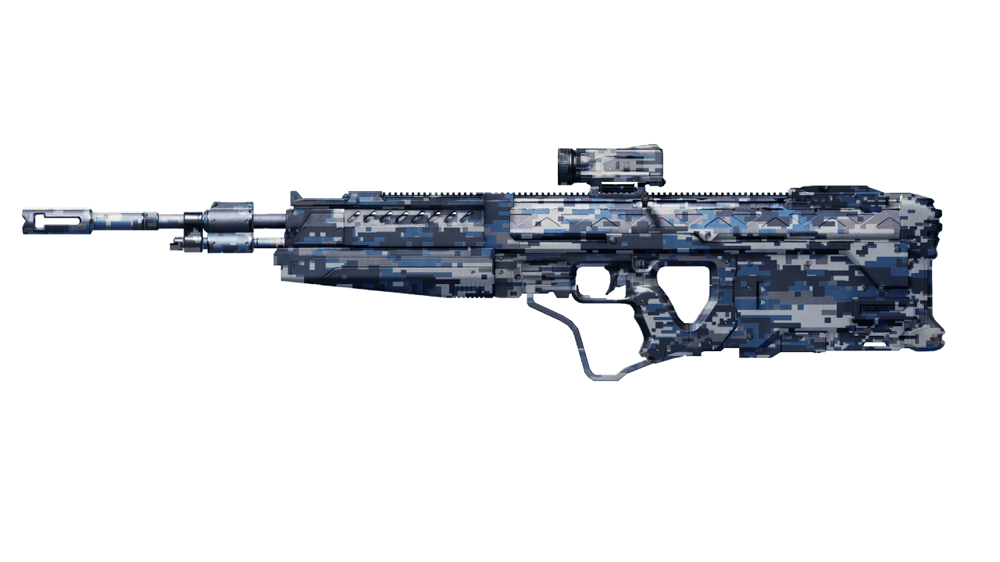
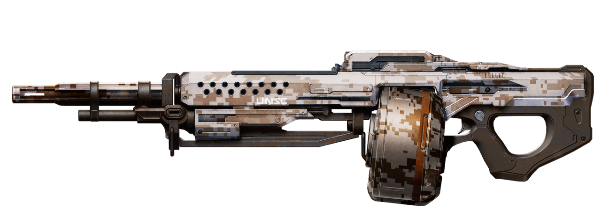
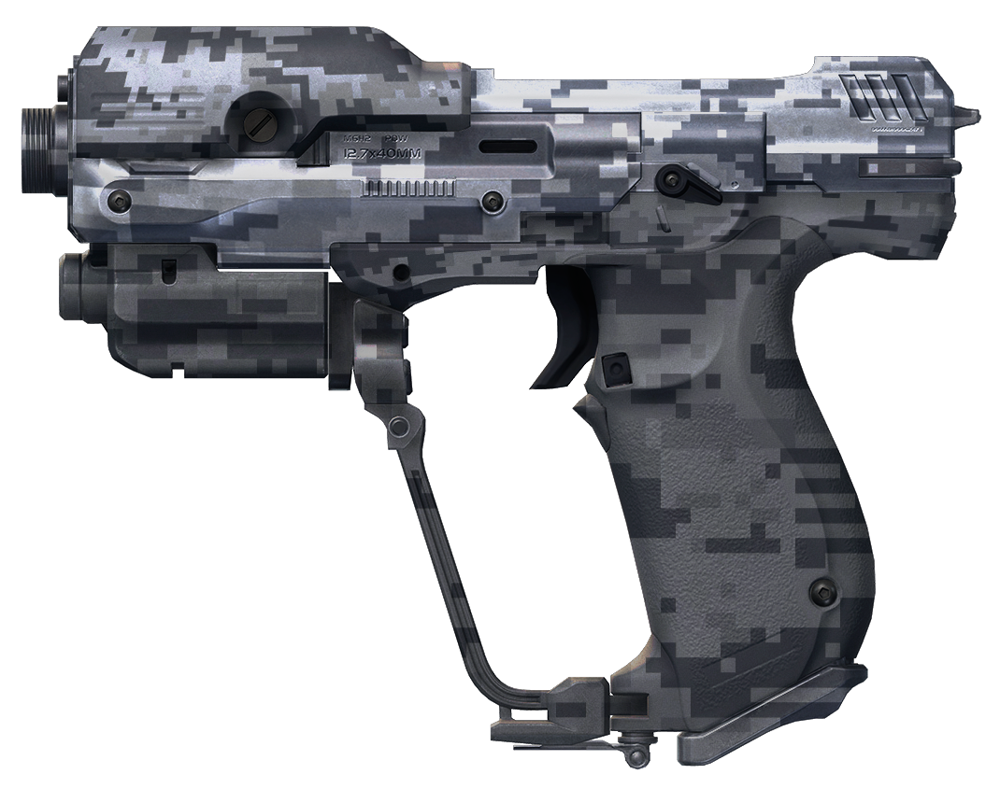

A sneak peak at the camo series UNSC weapon skins I am working on. These are just kind of a proof of concept for what could be, I guess.
Kinda wish I could do more than just make fan REQs and skins. But this is enough, for now. I love designing. I miss my freelance jobs.
These are awesome!
I want that DMR